MELANIFY / Pichia pastoris
LABORATORY NOTEBOOK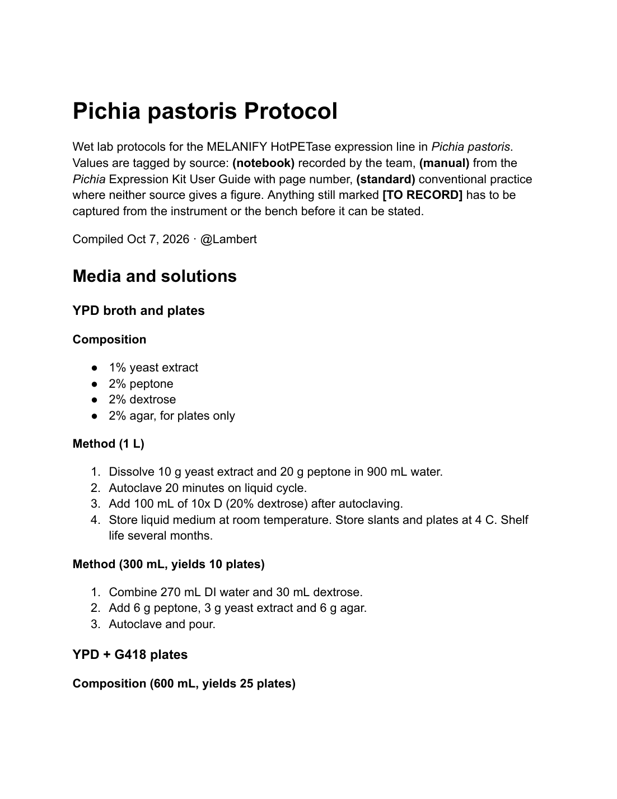
Read page transcription
Pichia pastoris Protocol
Wet lab protocols for the MELANIFY HotPETase expression line in Pichia pastoris. Values are tagged by source: (notebook) recorded by the team, (manual) from the Pichia Expression Kit User Guide with page number, (standard) conventional practice where neither source gives a figure. Anything still marked [TO RECORD] has to be captured from the instrument or the bench before it can be stated.
Compiled Oct 7, 2026 · @Lambert
Media and solutions
YPD broth and plates
Composition
● 1% yeast extract ● 2% peptone ● 2% dextrose ● 2% agar, for plates only
Method (1 L)
1. Dissolve 10 g yeast extract and 20 g peptone in 900 mL water. 2. Autoclave 20 minutes on liquid cycle. 3. Add 100 mL of 10x D (20% dextrose) after autoclaving. 4. Store liquid medium at room temperature. Store slants and plates at 4 C. Shelf life several months.
Method (300 mL, yields 10 plates)
1. Combine 270 mL DI water and 30 mL dextrose. 2. Add 6 g peptone, 3 g yeast extract and 6 g agar. 3. Autoclave and pour.
YPD + G418 plates
Composition (600 mL, yields 25 plates)
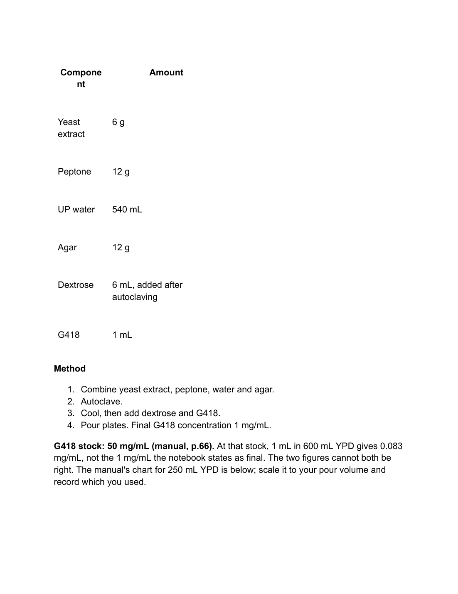
Read page transcription
Compone
Amount
nt
Yeast extract
6 g
Peptone 12 g
UP water 540 mL
Agar 12 g
Dextrose 6 mL, added after autoclaving
G418 1 mL
Method
1. Combine yeast extract, peptone, water and agar. 2. Autoclave. 3. Cool, then add dextrose and G418. 4. Pour plates. Final G418 concentration 1 mg/mL.
G418 stock: 50 mg/mL (manual, p.66). At that stock, 1 mL in 600 mL YPD gives 0.083 mg/mL, not the 1 mg/mL the notebook states as final. The two figures cannot both be right. The manual's chart for 250 mL YPD is below; scale it to your pour volume and record which you used.
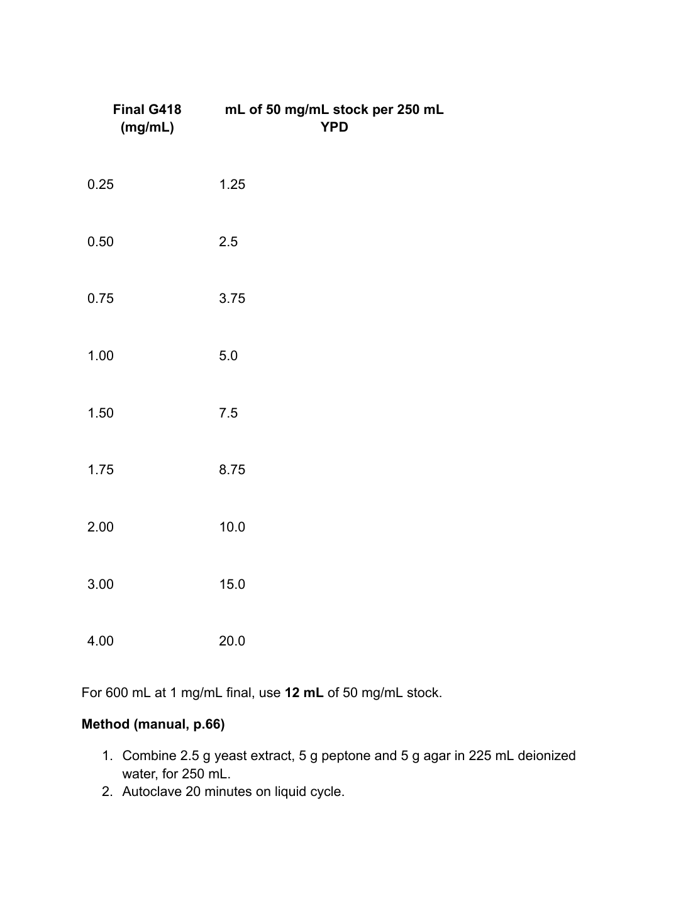
Read page transcription
Final G418
mL of 50 mg/mL stock per 250 mL
(mg/mL)
YPD
0.25 1.25
0.50 2.5
0.75 3.75
1.00 5.0
1.50 7.5
1.75 8.75
2.00 10.0
3.00 15.0
4.00 20.0
For 600 mL at 1 mg/mL final, use 12 mL of 50 mg/mL stock.
Method (manual, p.66)
1. Combine 2.5 g yeast extract, 5 g peptone and 5 g agar in 225 mL deionized water, for 250 mL. 2. Autoclave 20 minutes on liquid cycle.
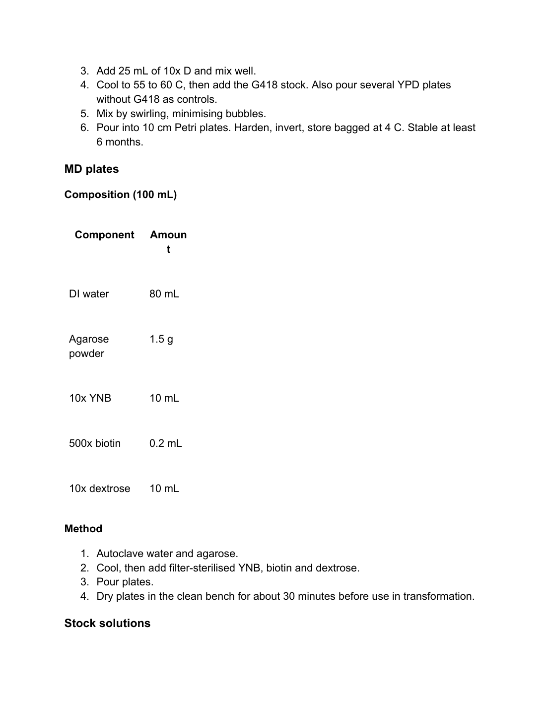
Read page transcription
3. Add 25 mL of 10x D and mix well. 4. Cool to 55 to 60 C, then add the G418 stock. Also pour several YPD plates without G418 as controls. 5. Mix by swirling, minimising bubbles. 6. Pour into 10 cm Petri plates. Harden, invert, store bagged at 4 C. Stable at least 6 months.
MD plates
Composition (100 mL)
Component Amoun
t
DI water 80 mL
Agarose powder
1.5 g
10x YNB 10 mL
500x biotin 0.2 mL
10x dextrose 10 mL
Method
1. Autoclave water and agarose. 2. Cool, then add filter-sterilised YNB, biotin and dextrose. 3. Pour plates. 4. Dry plates in the clean bench for about 30 minutes before use in transformation.
Stock solutions
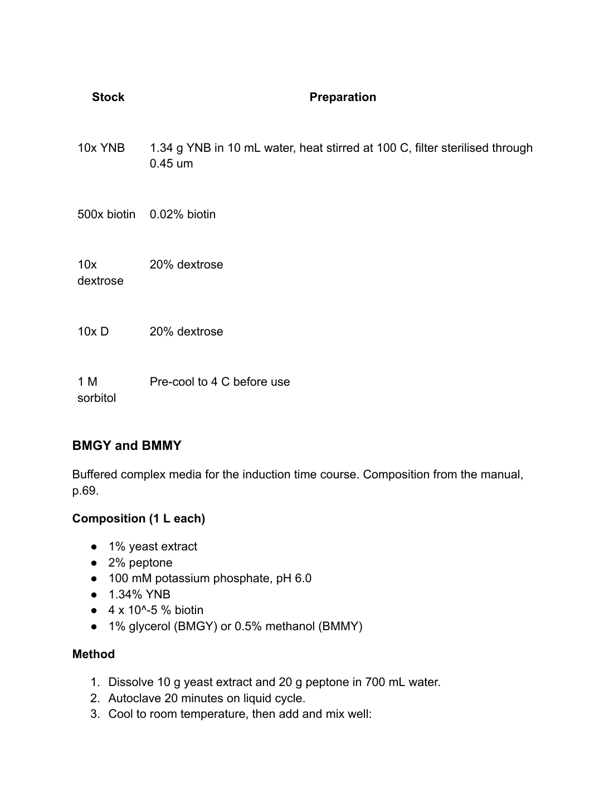
Read page transcription
Stock Preparation
10x YNB 1.34 g YNB in 10 mL water, heat stirred at 100 C, filter sterilised through 0.45 um
500x biotin 0.02% biotin
10x dextrose
20% dextrose
10x D 20% dextrose
1 M sorbitol
Pre-cool to 4 C before use
BMGY and BMMY
Buffered complex media for the induction time course. Composition from the manual, p.69.
Composition (1 L each)
● 1% yeast extract ● 2% peptone ● 100 mM potassium phosphate, pH 6.0 ● 1.34% YNB ● 4 x 10^-5 % biotin ● 1% glycerol (BMGY) or 0.5% methanol (BMMY)
Method
1. Dissolve 10 g yeast extract and 20 g peptone in 700 mL water. 2. Autoclave 20 minutes on liquid cycle. 3. Cool to room temperature, then add and mix well:
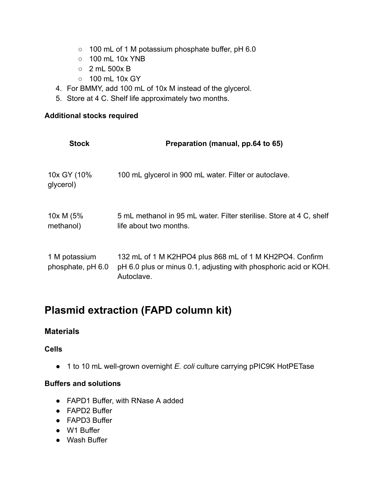
Read page transcription
○ 100 mL of 1 M potassium phosphate buffer, pH 6.0 ○ 100 mL 10x YNB ○ 2 mL 500x B ○ 100 mL 10x GY 4. For BMMY, add 100 mL of 10x M instead of the glycerol. 5. Store at 4 C. Shelf life approximately two months.
Additional stocks required
Stock Preparation (manual, pp.64 to 65)
10x GY (10% glycerol)
100 mL glycerol in 900 mL water. Filter or autoclave.
10x M (5% methanol)
5 mL methanol in 95 mL water. Filter sterilise. Store at 4 C, shelf life about two months.
1 M potassium phosphate, pH 6.0
132 mL of 1 M K2HPO4 plus 868 mL of 1 M KH2PO4. Confirm pH 6.0 plus or minus 0.1, adjusting with phosphoric acid or KOH. Autoclave.
Plasmid extraction (FAPD column kit)
Materials
Cells
● 1 to 10 mL well-grown overnight E. coli culture carrying pPIC9K HotPETase
Buffers and solutions
● FAPD1 Buffer, with RNase A added ● FAPD2 Buffer ● FAPD3 Buffer ● W1 Buffer ● Wash Buffer
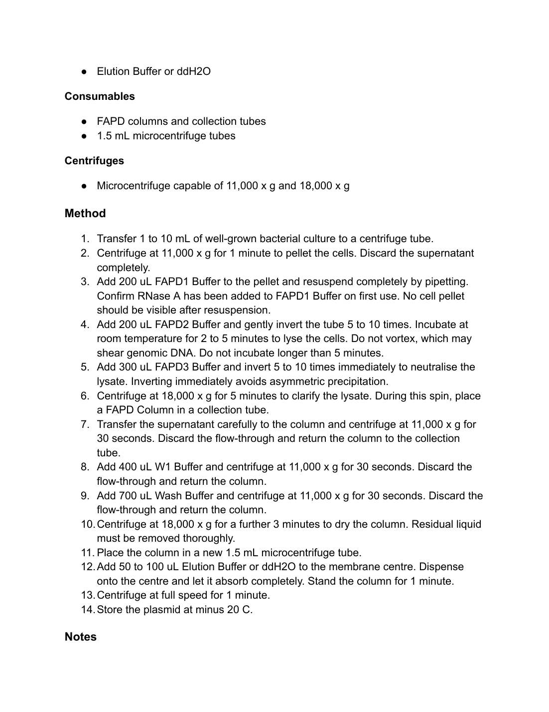
Read page transcription
● Elution Buffer or ddH2O
Consumables
● FAPD columns and collection tubes ● 1.5 mL microcentrifuge tubes
Centrifuges
● Microcentrifuge capable of 11,000 x g and 18,000 x g
Method
1. Transfer 1 to 10 mL of well-grown bacterial culture to a centrifuge tube. 2. Centrifuge at 11,000 x g for 1 minute to pellet the cells. Discard the supernatant completely. 3. Add 200 uL FAPD1 Buffer to the pellet and resuspend completely by pipetting. Confirm RNase A has been added to FAPD1 Buffer on first use. No cell pellet should be visible after resuspension. 4. Add 200 uL FAPD2 Buffer and gently invert the tube 5 to 10 times. Incubate at room temperature for 2 to 5 minutes to lyse the cells. Do not vortex, which may shear genomic DNA. Do not incubate longer than 5 minutes. 5. Add 300 uL FAPD3 Buffer and invert 5 to 10 times immediately to neutralise the lysate. Inverting immediately avoids asymmetric precipitation. 6. Centrifuge at 18,000 x g for 5 minutes to clarify the lysate. During this spin, place a FAPD Column in a collection tube. 7. Transfer the supernatant carefully to the column and centrifuge at 11,000 x g for 30 seconds. Discard the flow-through and return the column to the collection tube. 8. Add 400 uL W1 Buffer and centrifuge at 11,000 x g for 30 seconds. Discard the flow-through and return the column. 9. Add 700 uL Wash Buffer and centrifuge at 11,000 x g for 30 seconds. Discard the flow-through and return the column. 10.Centrifuge at 18,000 x g for a further 3 minutes to dry the column. Residual liquid must be removed thoroughly. 11.Place the column in a new 1.5 mL microcentrifuge tube. 12.Add 50 to 100 uL Elution Buffer or ddH2O to the membrane centre. Dispense onto the centre and let it absorb completely. Stand the column for 1 minute. 13.Centrifuge at full speed for 1 minute. 14.Store the plasmid at minus 20 C.
Notes
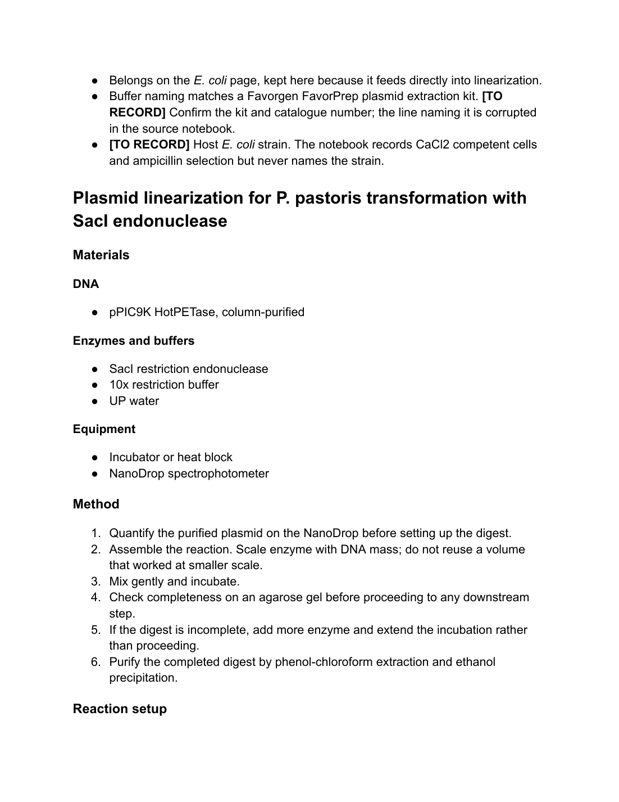
Read page transcription
● Belongs on the E. coli page, kept here because it feeds directly into linearization. ● Buffer naming matches a Favorgen FavorPrep plasmid extraction kit. [TO RECORD] Confirm the kit and catalogue number; the line naming it is corrupted in the source notebook. ● [TO RECORD] Host E. coli strain. The notebook records CaCl2 competent cells and ampicillin selection but never names the strain.
Plasmid linearization for P. pastoris transformation with
SacI endonuclease
Materials
DNA
● pPIC9K HotPETase, column-purified
Enzymes and buffers
● SacI restriction endonuclease ● 10x restriction buffer ● UP water
Equipment
● Incubator or heat block ● NanoDrop spectrophotometer
Method
1. Quantify the purified plasmid on the NanoDrop before setting up the digest. 2. Assemble the reaction. Scale enzyme with DNA mass; do not reuse a volume that worked at smaller scale. 3. Mix gently and incubate. 4. Check completeness on an agarose gel before proceeding to any downstream step. 5. If the digest is incomplete, add more enzyme and extend the incubation rather than proceeding. 6. Purify the completed digest by phenol-chloroform extraction and ethanol precipitation.
Reaction setup
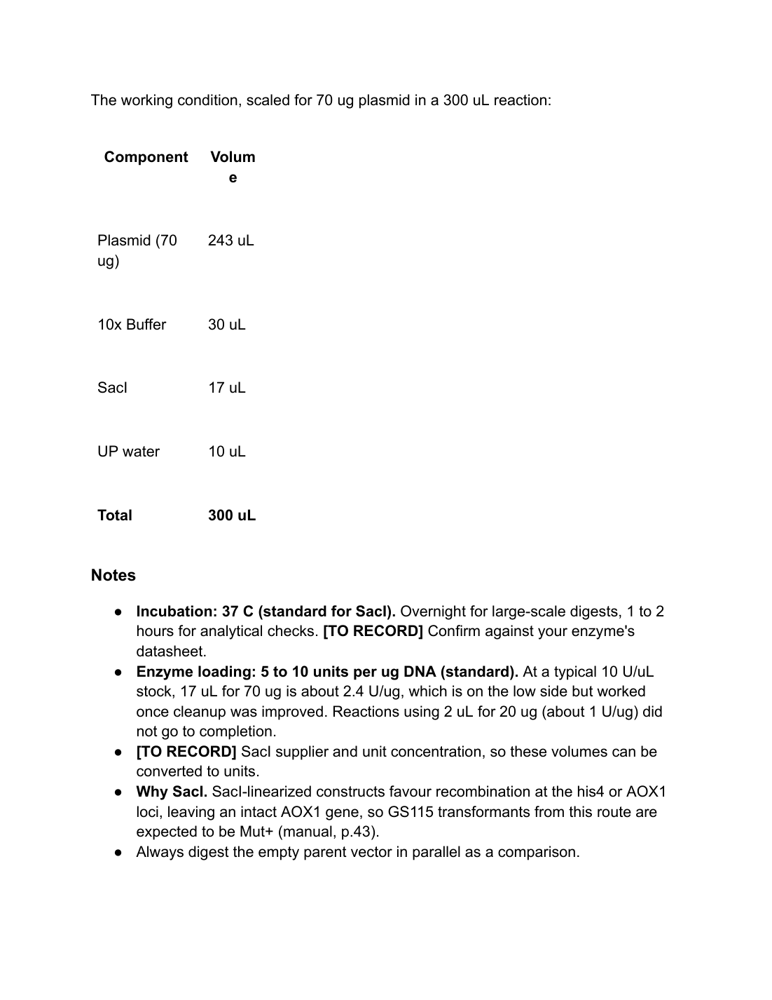
Read page transcription
The working condition, scaled for 70 ug plasmid in a 300 uL reaction:
Component Volum
e
Plasmid (70 ug)
243 uL
10x Buffer 30 uL
SacI 17 uL
UP water 10 uL
Total 300 uL
Notes
● Incubation: 37 C (standard for SacI). Overnight for large-scale digests, 1 to 2 hours for analytical checks. [TO RECORD] Confirm against your enzyme's datasheet. ● Enzyme loading: 5 to 10 units per ug DNA (standard). At a typical 10 U/uL stock, 17 uL for 70 ug is about 2.4 U/ug, which is on the low side but worked once cleanup was improved. Reactions using 2 uL for 20 ug (about 1 U/ug) did not go to completion. ● [TO RECORD] SacI supplier and unit concentration, so these volumes can be converted to units. ● Why SacI. SacI-linearized constructs favour recombination at the his4 or AOX1 loci, leaving an intact AOX1 gene, so GS115 transformants from this route are expected to be Mut+ (manual, p.43). ● Always digest the empty parent vector in parallel as a comparison.
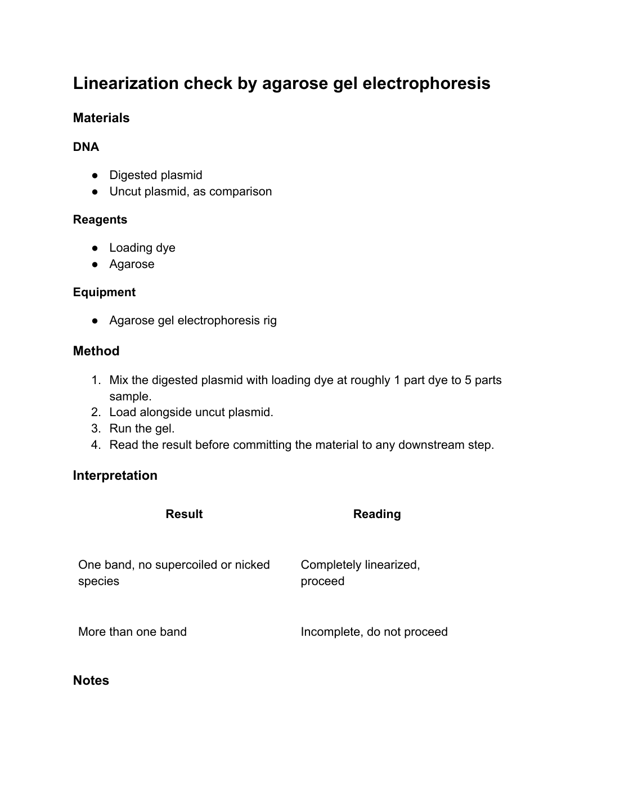
Read page transcription
Linearization check by agarose gel electrophoresis
Materials
DNA
● Digested plasmid ● Uncut plasmid, as comparison
Reagents
● Loading dye ● Agarose
Equipment
● Agarose gel electrophoresis rig
Method
1. Mix the digested plasmid with loading dye at roughly 1 part dye to 5 parts sample. 2. Load alongside uncut plasmid. 3. Run the gel. 4. Read the result before committing the material to any downstream step.
Interpretation
Result Reading
One band, no supercoiled or nicked species
Completely linearized, proceed
More than one band Incomplete, do not proceed
Notes
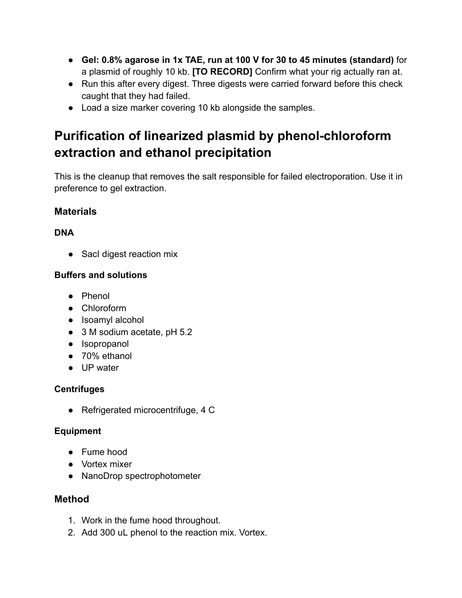
Read page transcription
● Gel: 0.8% agarose in 1x TAE, run at 100 V for 30 to 45 minutes (standard) for a plasmid of roughly 10 kb. [TO RECORD] Confirm what your rig actually ran at. ● Run this after every digest. Three digests were carried forward before this check caught that they had failed. ● Load a size marker covering 10 kb alongside the samples.
Purification of linearized plasmid by phenol-chloroform
extraction and ethanol precipitation
This is the cleanup that removes the salt responsible for failed electroporation. Use it in preference to gel extraction.
Materials
DNA
● SacI digest reaction mix
Buffers and solutions
● Phenol ● Chloroform ● Isoamyl alcohol ● 3 M sodium acetate, pH 5.2 ● Isopropanol ● 70% ethanol ● UP water
Centrifuges
● Refrigerated microcentrifuge, 4 C
Equipment
● Fume hood ● Vortex mixer ● NanoDrop spectrophotometer
Method
1. Work in the fume hood throughout. 2. Add 300 uL phenol to the reaction mix. Vortex.
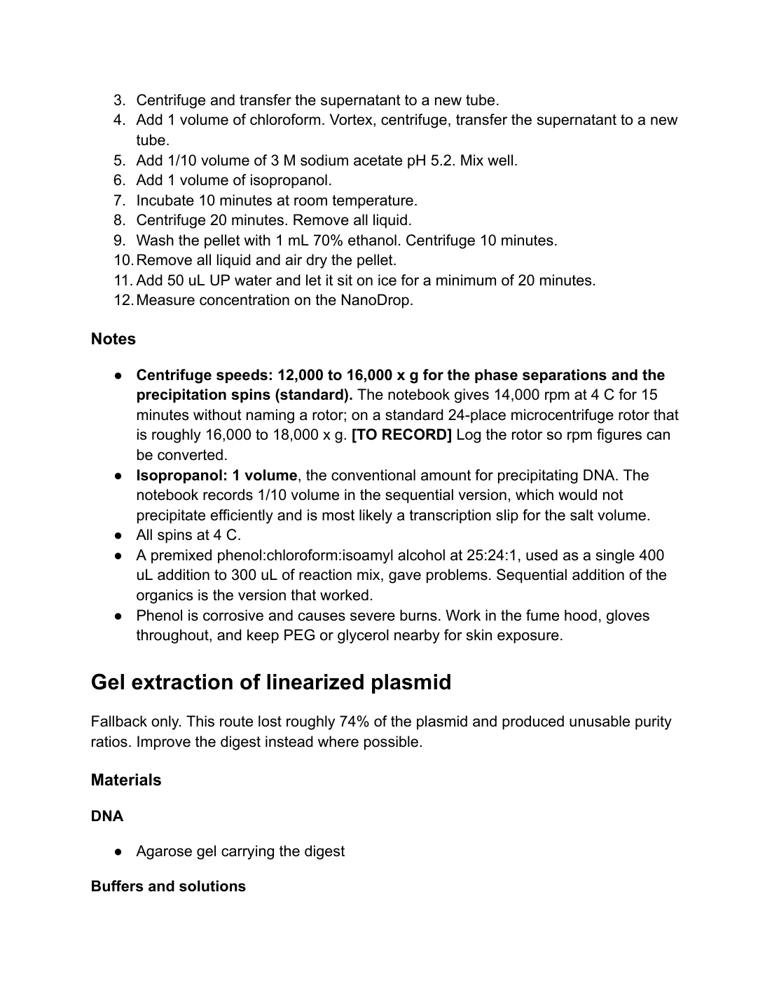
Read page transcription
3. Centrifuge and transfer the supernatant to a new tube. 4. Add 1 volume of chloroform. Vortex, centrifuge, transfer the supernatant to a new tube. 5. Add 1/10 volume of 3 M sodium acetate pH 5.2. Mix well. 6. Add 1 volume of isopropanol. 7. Incubate 10 minutes at room temperature. 8. Centrifuge 20 minutes. Remove all liquid. 9. Wash the pellet with 1 mL 70% ethanol. Centrifuge 10 minutes. 10.Remove all liquid and air dry the pellet. 11.Add 50 uL UP water and let it sit on ice for a minimum of 20 minutes. 12.Measure concentration on the NanoDrop.
Notes
● Centrifuge speeds: 12,000 to 16,000 x g for the phase separations and the precipitation spins (standard). The notebook gives 14,000 rpm at 4 C for 15 minutes without naming a rotor; on a standard 24-place microcentrifuge rotor that is roughly 16,000 to 18,000 x g. [TO RECORD] Log the rotor so rpm figures can be converted. ● Isopropanol: 1 volume, the conventional amount for precipitating DNA. The notebook records 1/10 volume in the sequential version, which would not precipitate efficiently and is most likely a transcription slip for the salt volume. ● All spins at 4 C. ● A premixed phenol:chloroform:isoamyl alcohol at 25:24:1, used as a single 400 uL addition to 300 uL of reaction mix, gave problems. Sequential addition of the organics is the version that worked. ● Phenol is corrosive and causes severe burns. Work in the fume hood, gloves throughout, and keep PEG or glycerol nearby for skin exposure.
Gel extraction of linearized plasmid
Fallback only. This route lost roughly 74% of the plasmid and produced unusable purity ratios. Improve the digest instead where possible.
Materials
DNA
● Agarose gel carrying the digest
Buffers and solutions
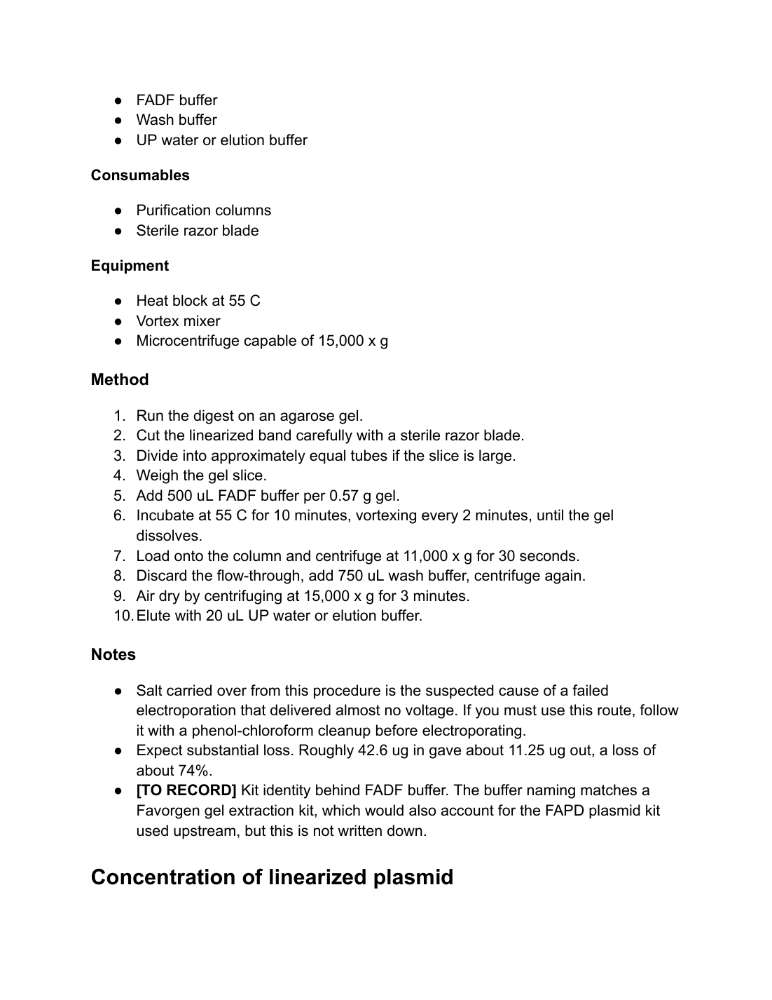
Read page transcription
● FADF buffer ● Wash buffer ● UP water or elution buffer
Consumables
● Purification columns ● Sterile razor blade
Equipment
● Heat block at 55 C ● Vortex mixer ● Microcentrifuge capable of 15,000 x g
Method
1. Run the digest on an agarose gel. 2. Cut the linearized band carefully with a sterile razor blade. 3. Divide into approximately equal tubes if the slice is large. 4. Weigh the gel slice. 5. Add 500 uL FADF buffer per 0.57 g gel. 6. Incubate at 55 C for 10 minutes, vortexing every 2 minutes, until the gel dissolves. 7. Load onto the column and centrifuge at 11,000 x g for 30 seconds. 8. Discard the flow-through, add 750 uL wash buffer, centrifuge again. 9. Air dry by centrifuging at 15,000 x g for 3 minutes. 10.Elute with 20 uL UP water or elution buffer.
Notes
● Salt carried over from this procedure is the suspected cause of a failed electroporation that delivered almost no voltage. If you must use this route, follow it with a phenol-chloroform cleanup before electroporating. ● Expect substantial loss. Roughly 42.6 ug in gave about 11.25 ug out, a loss of about 74%. ● [TO RECORD] Kit identity behind FADF buffer. The buffer naming matches a Favorgen gel extraction kit, which would also account for the FAPD plasmid kit used upstream, but this is not written down.
Concentration of linearized plasmid
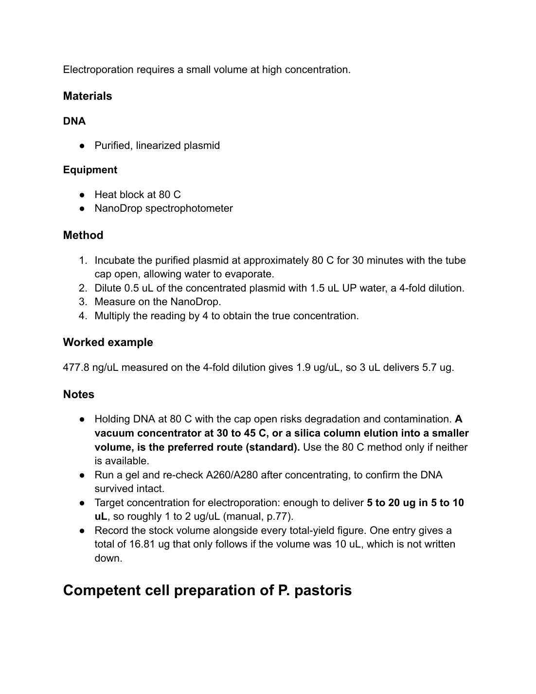
Read page transcription
Electroporation requires a small volume at high concentration.
Materials
DNA
● Purified, linearized plasmid
Equipment
● Heat block at 80 C ● NanoDrop spectrophotometer
Method
1. Incubate the purified plasmid at approximately 80 C for 30 minutes with the tube cap open, allowing water to evaporate. 2. Dilute 0.5 uL of the concentrated plasmid with 1.5 uL UP water, a 4-fold dilution. 3. Measure on the NanoDrop. 4. Multiply the reading by 4 to obtain the true concentration.
Worked example
477.8 ng/uL measured on the 4-fold dilution gives 1.9 ug/uL, so 3 uL delivers 5.7 ug.
Notes
● Holding DNA at 80 C with the cap open risks degradation and contamination. A vacuum concentrator at 30 to 45 C, or a silica column elution into a smaller volume, is the preferred route (standard). Use the 80 C method only if neither is available. ● Run a gel and re-check A260/A280 after concentrating, to confirm the DNA survived intact. ● Target concentration for electroporation: enough to deliver 5 to 20 ug in 5 to 10 uL, so roughly 1 to 2 ug/uL (manual, p.77). ● Record the stock volume alongside every total-yield figure. One entry gives a total of 16.81 ug that only follows if the volume was 10 uL, which is not written down.
Competent cell preparation of P. pastoris
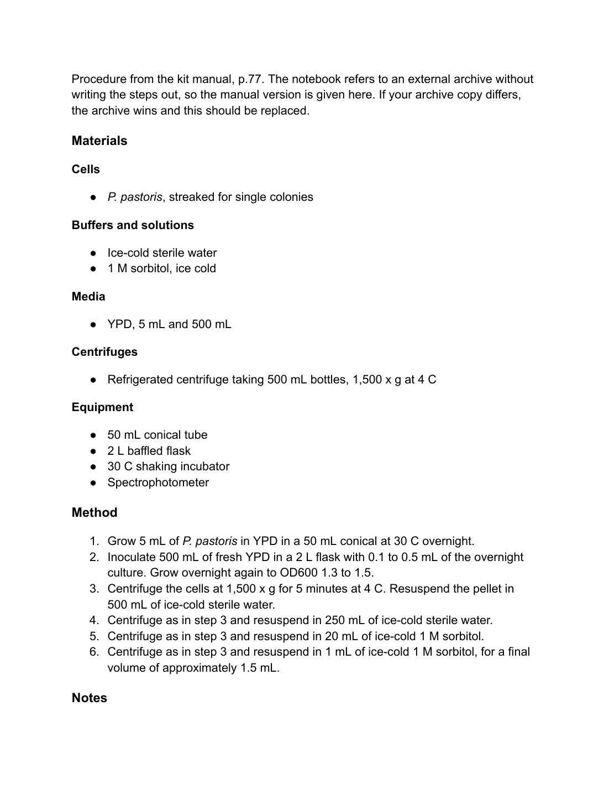
Read page transcription
Procedure from the kit manual, p.77. The notebook refers to an external archive without writing the steps out, so the manual version is given here. If your archive copy differs, the archive wins and this should be replaced.
Materials
Cells
● P. pastoris, streaked for single colonies
Buffers and solutions
● Ice-cold sterile water ● 1 M sorbitol, ice cold
Media
● YPD, 5 mL and 500 mL
Centrifuges
● Refrigerated centrifuge taking 500 mL bottles, 1,500 x g at 4 C
Equipment
● 50 mL conical tube ● 2 L baffled flask ● 30 C shaking incubator ● Spectrophotometer
Method
1. Grow 5 mL of P. pastoris in YPD in a 50 mL conical at 30 C overnight. 2. Inoculate 500 mL of fresh YPD in a 2 L flask with 0.1 to 0.5 mL of the overnight culture. Grow overnight again to OD600 1.3 to 1.5. 3. Centrifuge the cells at 1,500 x g for 5 minutes at 4 C. Resuspend the pellet in 500 mL of ice-cold sterile water. 4. Centrifuge as in step 3 and resuspend in 250 mL of ice-cold sterile water. 5. Centrifuge as in step 3 and resuspend in 20 mL of ice-cold 1 M sorbitol. 6. Centrifuge as in step 3 and resuspend in 1 mL of ice-cold 1 M sorbitol, for a final volume of approximately 1.5 mL.
Notes
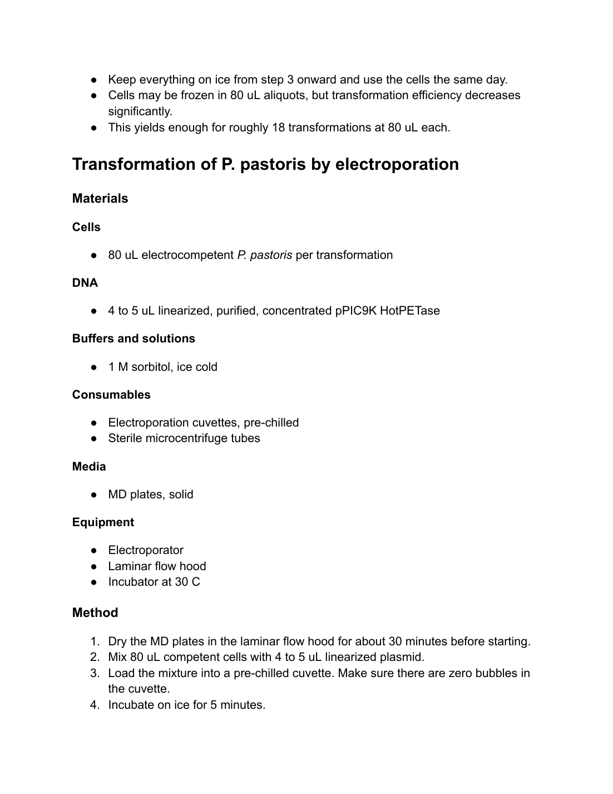
Read page transcription
● Keep everything on ice from step 3 onward and use the cells the same day. ● Cells may be frozen in 80 uL aliquots, but transformation efficiency decreases significantly. ● This yields enough for roughly 18 transformations at 80 uL each.
Transformation of P. pastoris by electroporation
Materials
Cells
● 80 uL electrocompetent P. pastoris per transformation
DNA
● 4 to 5 uL linearized, purified, concentrated pPIC9K HotPETase
Buffers and solutions
● 1 M sorbitol, ice cold
Consumables
● Electroporation cuvettes, pre-chilled ● Sterile microcentrifuge tubes
Media
● MD plates, solid
Equipment
● Electroporator ● Laminar flow hood ● Incubator at 30 C
Method
1. Dry the MD plates in the laminar flow hood for about 30 minutes before starting. 2. Mix 80 uL competent cells with 4 to 5 uL linearized plasmid. 3. Load the mixture into a pre-chilled cuvette. Make sure there are zero bubbles in the cuvette. 4. Incubate on ice for 5 minutes.
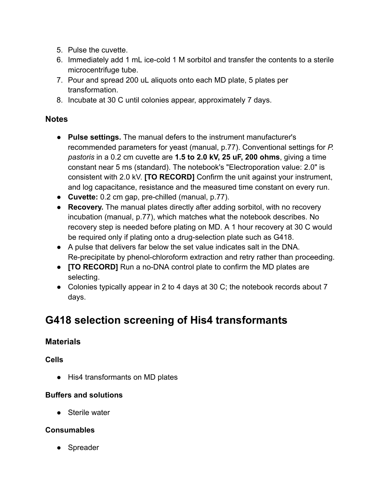
Read page transcription
5. Pulse the cuvette. 6. Immediately add 1 mL ice-cold 1 M sorbitol and transfer the contents to a sterile microcentrifuge tube. 7. Pour and spread 200 uL aliquots onto each MD plate, 5 plates per transformation. 8. Incubate at 30 C until colonies appear, approximately 7 days.
Notes
● Pulse settings. The manual defers to the instrument manufacturer's recommended parameters for yeast (manual, p.77). Conventional settings for P. pastoris in a 0.2 cm cuvette are 1.5 to 2.0 kV, 25 uF, 200 ohms, giving a time constant near 5 ms (standard). The notebook's "Electroporation value: 2.0" is consistent with 2.0 kV. [TO RECORD] Confirm the unit against your instrument, and log capacitance, resistance and the measured time constant on every run. ● Cuvette: 0.2 cm gap, pre-chilled (manual, p.77). ● Recovery. The manual plates directly after adding sorbitol, with no recovery incubation (manual, p.77), which matches what the notebook describes. No recovery step is needed before plating on MD. A 1 hour recovery at 30 C would be required only if plating onto a drug-selection plate such as G418. ● A pulse that delivers far below the set value indicates salt in the DNA. Re-precipitate by phenol-chloroform extraction and retry rather than proceeding. ● [TO RECORD] Run a no-DNA control plate to confirm the MD plates are selecting. ● Colonies typically appear in 2 to 4 days at 30 C; the notebook records about 7 days.
G418 selection screening of His4 transformants
Materials
Cells
● His4 transformants on MD plates
Buffers and solutions
● Sterile water
Consumables
● Spreader
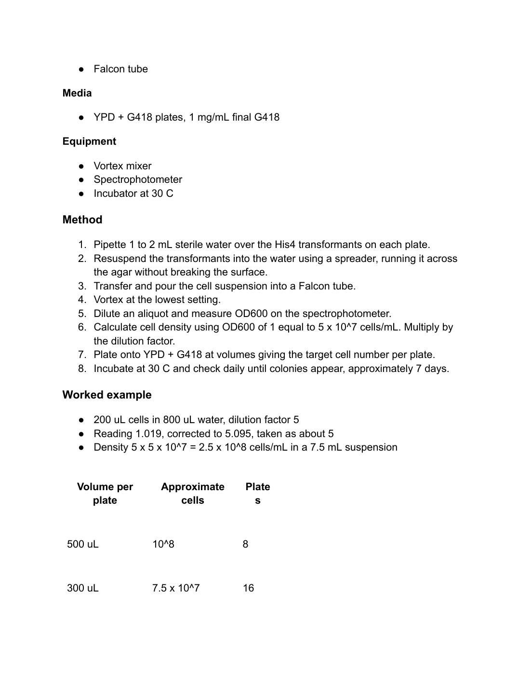
Read page transcription
● Falcon tube
Media
● YPD + G418 plates, 1 mg/mL final G418
Equipment
● Vortex mixer ● Spectrophotometer ● Incubator at 30 C
Method
1. Pipette 1 to 2 mL sterile water over the His4 transformants on each plate. 2. Resuspend the transformants into the water using a spreader, running it across the agar without breaking the surface. 3. Transfer and pour the cell suspension into a Falcon tube. 4. Vortex at the lowest setting. 5. Dilute an aliquot and measure OD600 on the spectrophotometer. 6. Calculate cell density using OD600 of 1 equal to 5 x 10^7 cells/mL. Multiply by the dilution factor. 7. Plate onto YPD + G418 at volumes giving the target cell number per plate. 8. Incubate at 30 C and check daily until colonies appear, approximately 7 days.
Worked example
● 200 uL cells in 800 uL water, dilution factor 5 ● Reading 1.019, corrected to 5.095, taken as about 5 ● Density 5 x 5 x 10^7 = 2.5 x 10^8 cells/mL in a 7.5 mL suspension
Volume per
Approximate
Plate
plate
cells
s
500 uL 10^8 8
300 uL 7.5 x 10^7 16
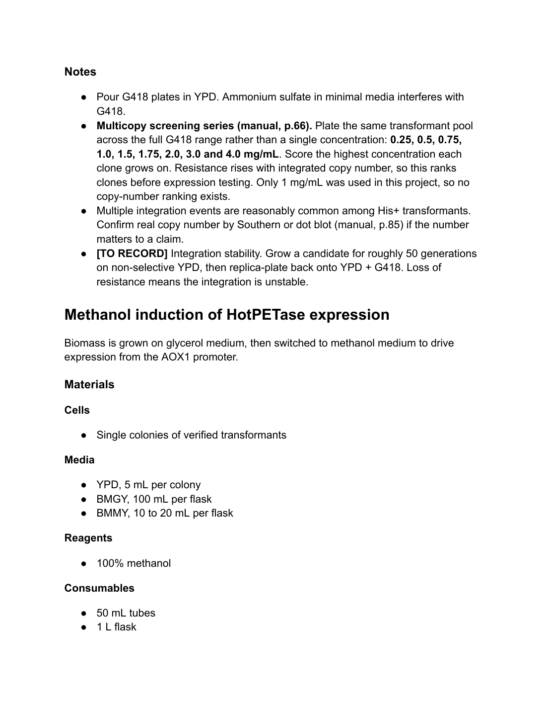
Read page transcription
Notes
● Pour G418 plates in YPD. Ammonium sulfate in minimal media interferes with G418. ● Multicopy screening series (manual, p.66). Plate the same transformant pool across the full G418 range rather than a single concentration: 0.25, 0.5, 0.75, 1.0, 1.5, 1.75, 2.0, 3.0 and 4.0 mg/mL. Score the highest concentration each clone grows on. Resistance rises with integrated copy number, so this ranks clones before expression testing. Only 1 mg/mL was used in this project, so no copy-number ranking exists. ● Multiple integration events are reasonably common among His+ transformants. Confirm real copy number by Southern or dot blot (manual, p.85) if the number matters to a claim. ● [TO RECORD] Integration stability. Grow a candidate for roughly 50 generations on non-selective YPD, then replica-plate back onto YPD + G418. Loss of resistance means the integration is unstable.
Methanol induction of HotPETase expression
Biomass is grown on glycerol medium, then switched to methanol medium to drive expression from the AOX1 promoter.
Materials
Cells
● Single colonies of verified transformants
Media
● YPD, 5 mL per colony ● BMGY, 100 mL per flask ● BMMY, 10 to 20 mL per flask
Reagents
● 100% methanol
Consumables
● 50 mL tubes ● 1 L flask
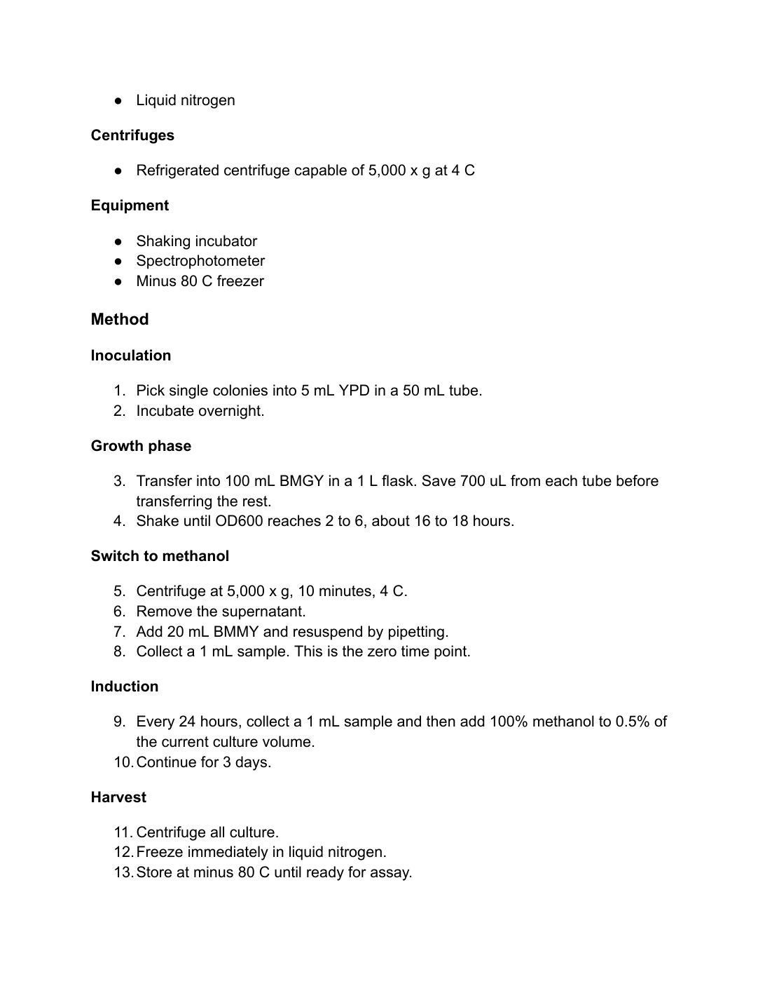
Read page transcription
● Liquid nitrogen
Centrifuges
● Refrigerated centrifuge capable of 5,000 x g at 4 C
Equipment
● Shaking incubator ● Spectrophotometer ● Minus 80 C freezer
Method
Inoculation
1. Pick single colonies into 5 mL YPD in a 50 mL tube. 2. Incubate overnight.
Growth phase
3. Transfer into 100 mL BMGY in a 1 L flask. Save 700 uL from each tube before transferring the rest. 4. Shake until OD600 reaches 2 to 6, about 16 to 18 hours.
Switch to methanol
5. Centrifuge at 5,000 x g, 10 minutes, 4 C. 6. Remove the supernatant. 7. Add 20 mL BMMY and resuspend by pipetting. 8. Collect a 1 mL sample. This is the zero time point.
Induction
9. Every 24 hours, collect a 1 mL sample and then add 100% methanol to 0.5% of the current culture volume. 10.Continue for 3 days.
Harvest
11.Centrifuge all culture. 12.Freeze immediately in liquid nitrogen. 13.Store at minus 80 C until ready for assay.
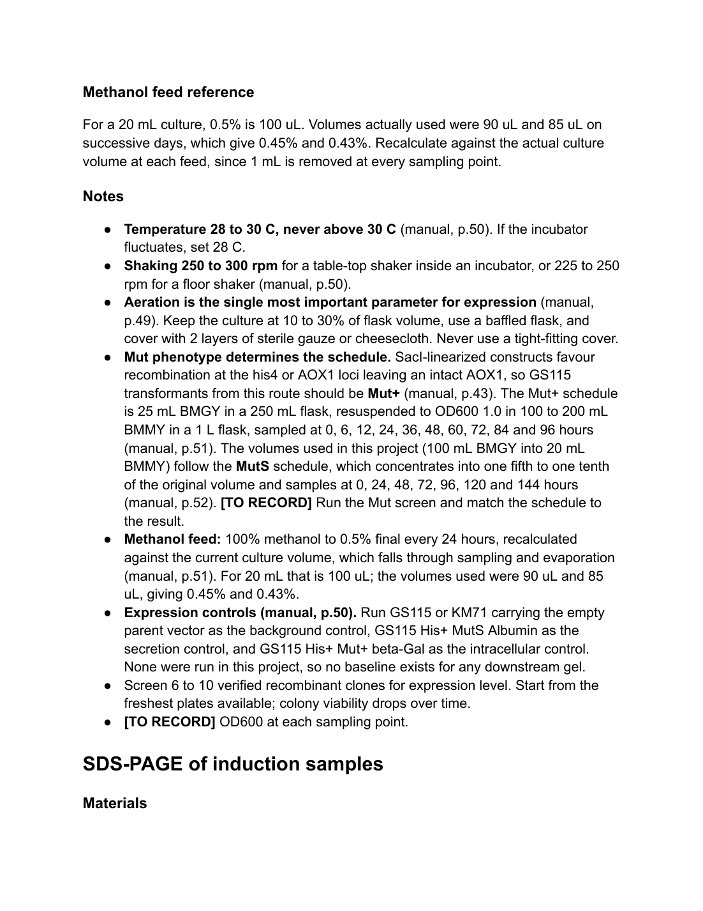
Read page transcription
Methanol feed reference
For a 20 mL culture, 0.5% is 100 uL. Volumes actually used were 90 uL and 85 uL on successive days, which give 0.45% and 0.43%. Recalculate against the actual culture volume at each feed, since 1 mL is removed at every sampling point.
Notes
● Temperature 28 to 30 C, never above 30 C (manual, p.50). If the incubator fluctuates, set 28 C. ● Shaking 250 to 300 rpm for a table-top shaker inside an incubator, or 225 to 250 rpm for a floor shaker (manual, p.50). ● Aeration is the single most important parameter for expression (manual, p.49). Keep the culture at 10 to 30% of flask volume, use a baffled flask, and cover with 2 layers of sterile gauze or cheesecloth. Never use a tight-fitting cover. ● Mut phenotype determines the schedule. SacI-linearized constructs favour recombination at the his4 or AOX1 loci leaving an intact AOX1, so GS115 transformants from this route should be Mut+ (manual, p.43). The Mut+ schedule is 25 mL BMGY in a 250 mL flask, resuspended to OD600 1.0 in 100 to 200 mL BMMY in a 1 L flask, sampled at 0, 6, 12, 24, 36, 48, 60, 72, 84 and 96 hours (manual, p.51). The volumes used in this project (100 mL BMGY into 20 mL BMMY) follow the MutS schedule, which concentrates into one fifth to one tenth of the original volume and samples at 0, 24, 48, 72, 96, 120 and 144 hours (manual, p.52). [TO RECORD] Run the Mut screen and match the schedule to the result. ● Methanol feed: 100% methanol to 0.5% final every 24 hours, recalculated against the current culture volume, which falls through sampling and evaporation (manual, p.51). For 20 mL that is 100 uL; the volumes used were 90 uL and 85 uL, giving 0.45% and 0.43%. ● Expression controls (manual, p.50). Run GS115 or KM71 carrying the empty parent vector as the background control, GS115 His+ MutS Albumin as the secretion control, and GS115 His+ Mut+ beta-Gal as the intracellular control. None were run in this project, so no baseline exists for any downstream gel. ● Screen 6 to 10 verified recombinant clones for expression level. Start from the freshest plates available; colony viability drops over time. ● [TO RECORD] OD600 at each sampling point.
SDS-PAGE of induction samples
Materials
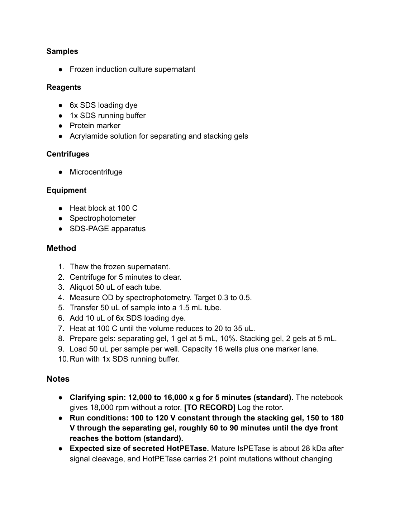
Read page transcription
Samples
● Frozen induction culture supernatant
Reagents
● 6x SDS loading dye ● 1x SDS running buffer ● Protein marker ● Acrylamide solution for separating and stacking gels
Centrifuges
● Microcentrifuge
Equipment
● Heat block at 100 C ● Spectrophotometer ● SDS-PAGE apparatus
Method
1. Thaw the frozen supernatant. 2. Centrifuge for 5 minutes to clear. 3. Aliquot 50 uL of each tube. 4. Measure OD by spectrophotometry. Target 0.3 to 0.5. 5. Transfer 50 uL of sample into a 1.5 mL tube. 6. Add 10 uL of 6x SDS loading dye. 7. Heat at 100 C until the volume reduces to 20 to 35 uL. 8. Prepare gels: separating gel, 1 gel at 5 mL, 10%. Stacking gel, 2 gels at 5 mL. 9. Load 50 uL per sample per well. Capacity 16 wells plus one marker lane. 10.Run with 1x SDS running buffer.
Notes
● Clarifying spin: 12,000 to 16,000 x g for 5 minutes (standard). The notebook gives 18,000 rpm without a rotor. [TO RECORD] Log the rotor. ● Run conditions: 100 to 120 V constant through the stacking gel, 150 to 180 V through the separating gel, roughly 60 to 90 minutes until the dye front reaches the bottom (standard). ● Expected size of secreted HotPETase. Mature IsPETase is about 28 kDa after signal cleavage, and HotPETase carries 21 point mutations without changing
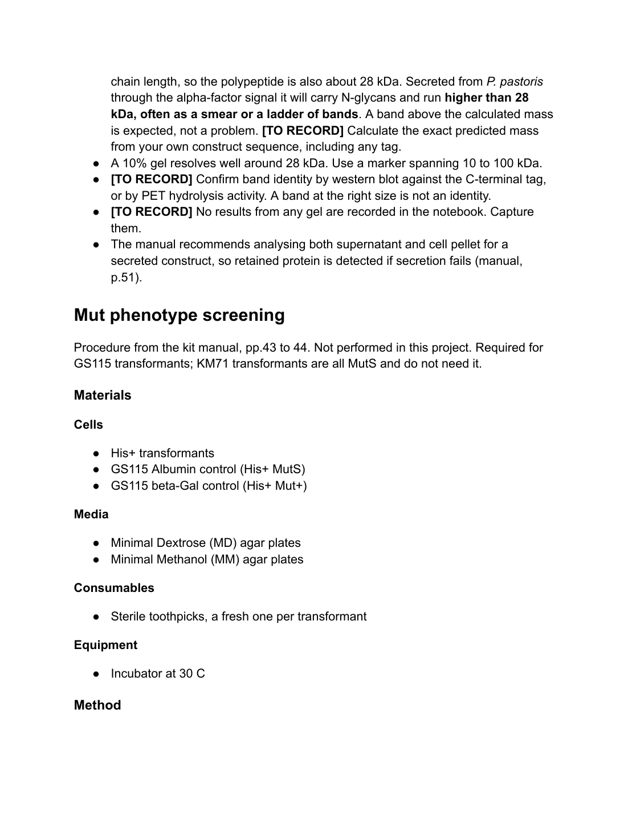
Read page transcription
chain length, so the polypeptide is also about 28 kDa. Secreted from P. pastoris through the alpha-factor signal it will carry N-glycans and run higher than 28 kDa, often as a smear or a ladder of bands. A band above the calculated mass is expected, not a problem. [TO RECORD] Calculate the exact predicted mass from your own construct sequence, including any tag. ● A 10% gel resolves well around 28 kDa. Use a marker spanning 10 to 100 kDa. ● [TO RECORD] Confirm band identity by western blot against the C-terminal tag, or by PET hydrolysis activity. A band at the right size is not an identity. ● [TO RECORD] No results from any gel are recorded in the notebook. Capture them. ● The manual recommends analysing both supernatant and cell pellet for a secreted construct, so retained protein is detected if secretion fails (manual, p.51).
Mut phenotype screening
Procedure from the kit manual, pp.43 to 44. Not performed in this project. Required for GS115 transformants; KM71 transformants are all MutS and do not need it.
Materials
Cells
● His+ transformants ● GS115 Albumin control (His+ MutS) ● GS115 beta-Gal control (His+ Mut+)
Media
● Minimal Dextrose (MD) agar plates ● Minimal Methanol (MM) agar plates
Consumables
● Sterile toothpicks, a fresh one per transformant
Equipment
● Incubator at 30 C
Method
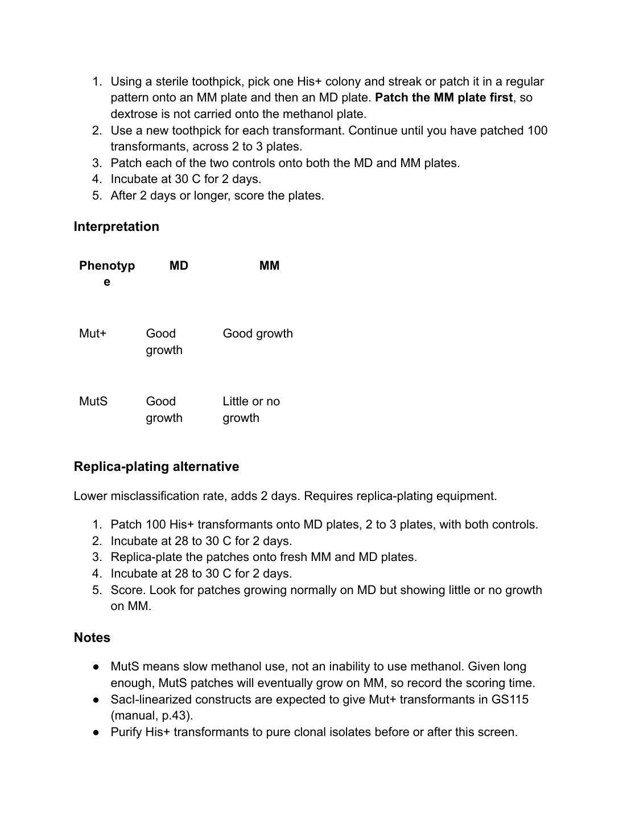
Read page transcription
1. Using a sterile toothpick, pick one His+ colony and streak or patch it in a regular pattern onto an MM plate and then an MD plate. Patch the MM plate first, so dextrose is not carried onto the methanol plate. 2. Use a new toothpick for each transformant. Continue until you have patched 100 transformants, across 2 to 3 plates. 3. Patch each of the two controls onto both the MD and MM plates. 4. Incubate at 30 C for 2 days. 5. After 2 days or longer, score the plates.
Interpretation
Phenotyp
MD MM
e
Mut+ Good growth
Good growth
MutS Good growth
Little or no growth
Replica-plating alternative
Lower misclassification rate, adds 2 days. Requires replica-plating equipment.
1. Patch 100 His+ transformants onto MD plates, 2 to 3 plates, with both controls. 2. Incubate at 28 to 30 C for 2 days. 3. Replica-plate the patches onto fresh MM and MD plates. 4. Incubate at 28 to 30 C for 2 days. 5. Score. Look for patches growing normally on MD but showing little or no growth on MM.
Notes
● MutS means slow methanol use, not an inability to use methanol. Given long enough, MutS patches will eventually grow on MM, so record the scoring time. ● SacI-linearized constructs are expected to give Mut+ transformants in GS115 (manual, p.43). ● Purify His+ transformants to pure clonal isolates before or after this screen.